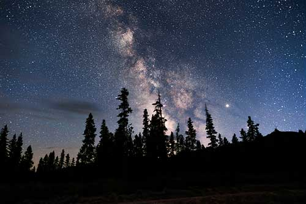

Weather Forecast
Best Star-Gazing Spots and Tips!

Idaho’s Craters of the Moon National Monument is designated as one of
39 “International Dark Sky Parks” and the best place to stargaze in
Central/Eastern Idaho. Not only is the Craters of the Moon National
Monument strikingly beautiful in the daytime, but the camping at night
is incredible. With the night sky visible from all points of the
horizon, it really is like being immersed in space.
In the middle of the Sawtooth National Forest, far from any light
pollutants, this campground boasts a beautiful lake that reflects the
heavens above. At night, the view is breathtaking as the Milky Way and
planets from our solar system ignite the sky. Just remember to bring
your scentless deodorant and bear spray, and enjoy the nights you will
remember forever.
Find Something in the Stars for You Whether you prefer to find the
zodiacs or the Andromeda galaxy, there is something in the stars for
everyone. Before you leave for the night, dive into some literature
and learn about what you’ll be seeing in the sky. Be sure to check out
other planet’s moons, the Chinese zodiacs, Mayan astrology,
neighboring galaxies, and more. At this point, not even the sky is the
limit.